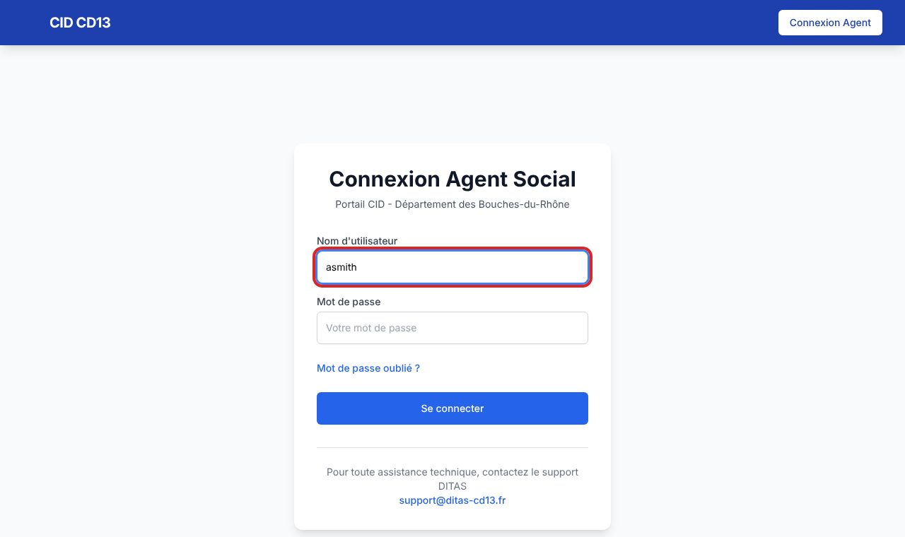

1Saisir ses identifiants

- Ouvrez CID dans votre navigateur.
- Tapez votre nom d'utilisateur puis votre mot de passe.
- Cliquez sur Se connecter. La page d'accueil et le menu de CID s'affichent.
Mot de passe oublié ? Le lien de la page n'est pas encore actif : adressez-vous au gestionnaire des accès de votre MDS.
Bon à savoir
- Le menu en haut de l'écran dépend de votre profil : un travailleur social, un cadre ou un agent de la CRIP ne voient pas les mêmes rubriques.
- Pensez à vous déconnecter (bouton Déconnexion, en haut à droite) si vous quittez un poste partagé.
Et ensuite ?
Cliquez sur une image pour l'agrandir. Le cadre rouge montre où cliquer ou quoi remplir. Toutes les données affichées sont fictives.